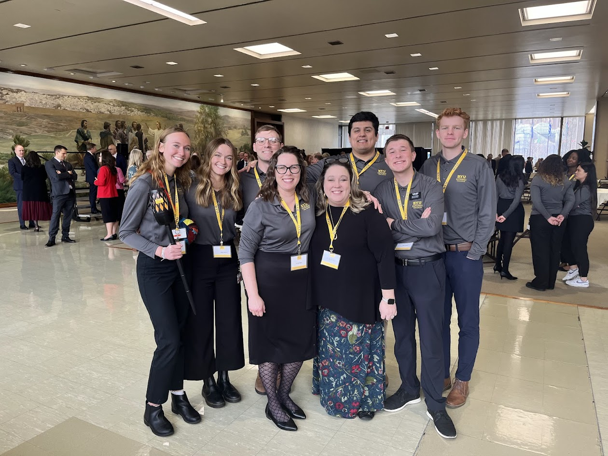

I'm a small town kid at BYU studying strategy. I love my family, especially my 7 neices and nephews. I love solving problems and helping people.
My greatest strengths are strategic thinking, empathy, and responsibility. I value honesty and hard work as well as autonomy and creativity.
I currently work for TMA performance (a talent management software company) assisting our consultants and PM's service our clients by creating
presentation materials including slide decks and executive summaries.
I plan to persue a career in product management at TMA where I can make a difference in the lives of working professionals.